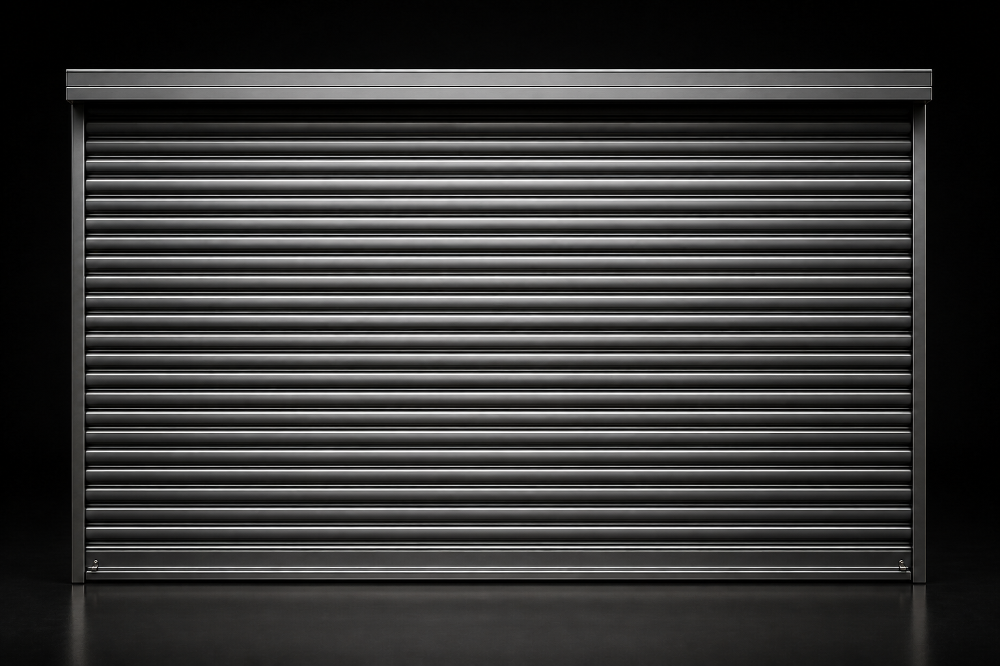

COMERCIAL
Cotizar Modelo Comercial CM-01
Cierre metálico de presentación sobria para locales y accesos comerciales.
Precio: A consultarCortinas metálicas para locales, bodegas y accesos que requieren resistencia, operación práctica y una terminación profesional.

Consideramos dimensiones, frecuencia de uso y nivel de visibilidad para orientar la elección de cada cortina.
Valores a consultar según medidas, terminación y sistema de operación.
Cierre metálico de presentación sobria para locales y accesos comerciales.
Precio: A consultarAlternativa funcional para vanos comerciales de menor tamaño.
Precio: A consultarProtección para fachadas comerciales con una apariencia limpia.
Precio: A consultarSolución para bodegas y espacios que requieren mayor resistencia.
Precio: A consultarConfiguración pensada para accesos amplios y operación frecuente.
Precio: A consultarCierre robusto para proteger instalaciones y áreas operativas.
Precio: A consultarOperación motorizada para una apertura cotidiana más cómoda.
Precio: A consultarAutomatización adaptada a locales y accesos de uso frecuente.
Precio: A consultarAlternativa motorizada para proyectos que exigen confiabilidad.
Precio: A consultarEnvíanos las medidas generales y el tipo de uso para orientarte.
Ir a contacto